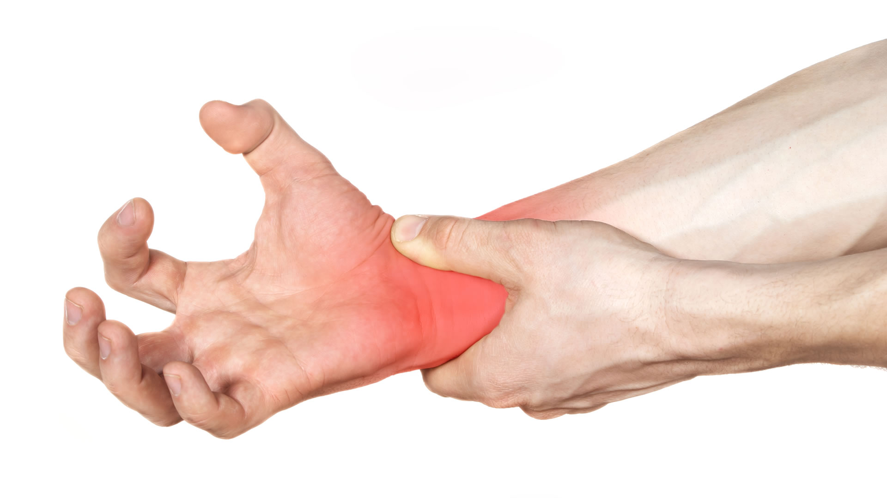

Sindrome del Túnel Carpiano y Fatiga visual | Muestra de seguridad e higiene

El síndrome del túnel carpiano (STC) ocurre cuando el nervio mediano (El cual controla la sensación en la palma, el pulgar, el índice y el dedo medio.), que pasa por un canal estrecho en la muñeca llamado túnel carpiano, se comprime o irrita.
Sus síntomas más comunes son:
Es especialmente frecuente en quienes realizan movimientos repetitivos con las manos. Las mujeres tienden a desarrollarlo 3 veces más que los hombres.
Los grupos con mayor riesgo son:
Adoptar buenos hábitos ergonómicos y hacer pausas activas son las formas más efectivas de prevención.

Mantener la muñeca recta al escribir.
Usar teclado y mouse de forma cómoda.
Hacer pausas cada 30-60 minutos.
Realizar ejercicios y estiramientos de manos y muñecas
No ejercer demasiada presión sobre la muñeca
Mantener una postura correcta al sentarse